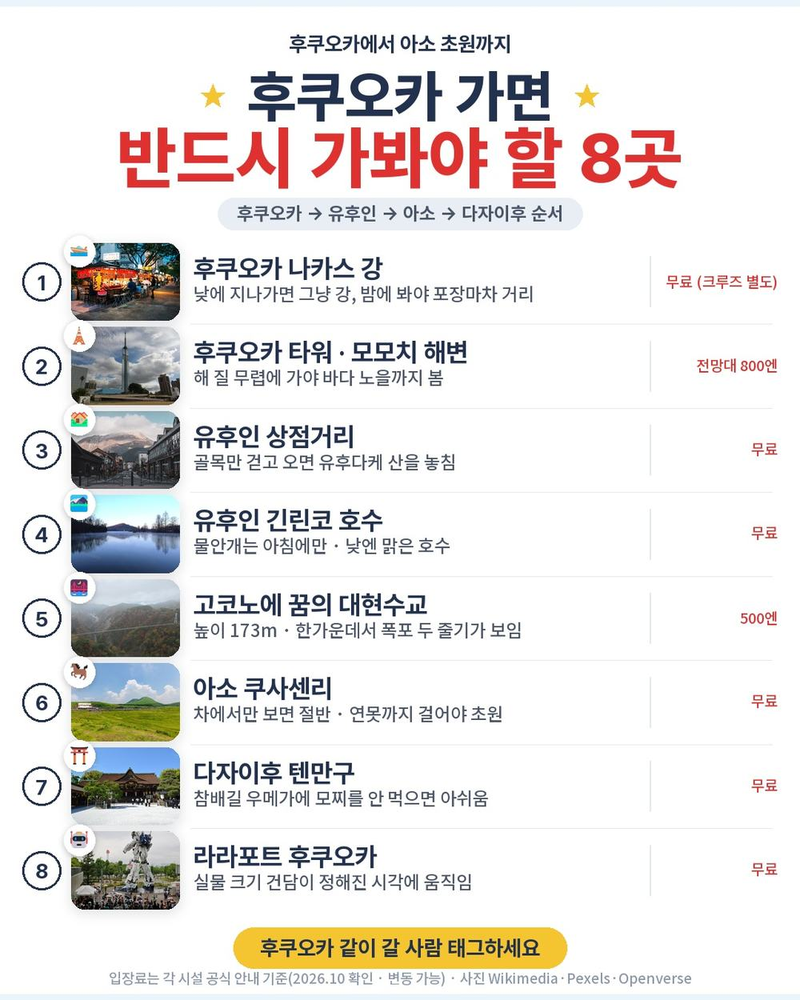
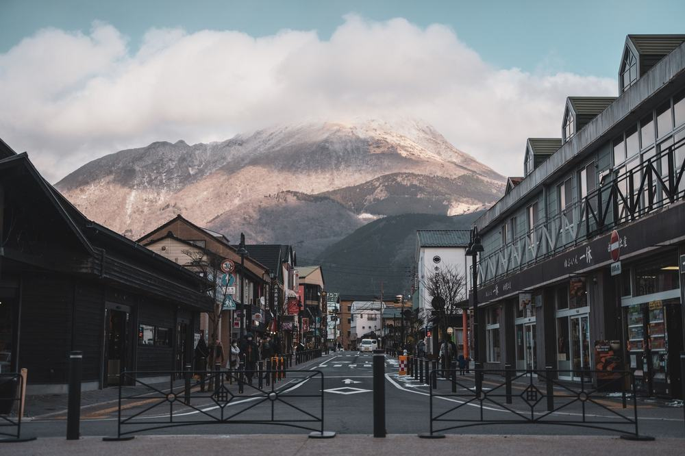
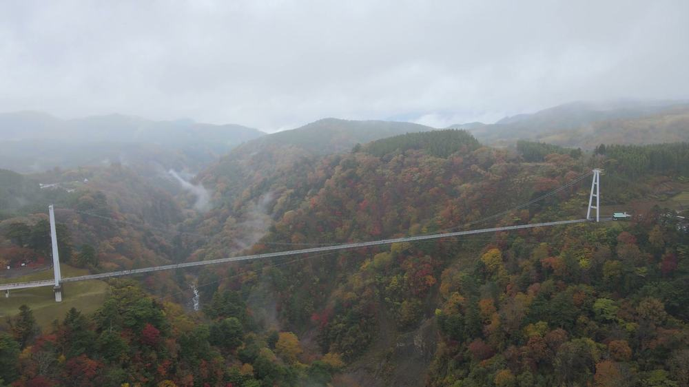
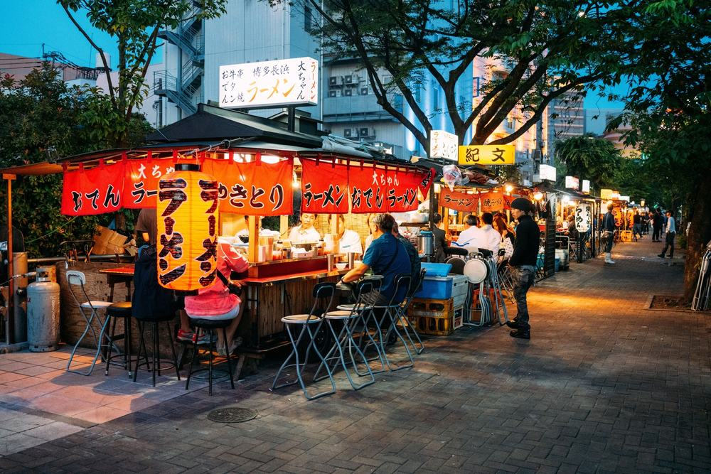

노랑풍선 후쿠오카 패키지 여행 79만 9천원, 온천에 대게 무제한까지 될까?

부모님이 온천은 꼭 하고 싶다고 해서 2박 3일짜리 규슈 패키지를 찾고 있었음. 짧은 일정이라 하루는 온천, 하루는 시내에서 자는 구성이 제일 끌렸음.
그러다 노랑풍선 상품이 걸림. 79만 9천원에 힐튼 1박 + 온천 호텔 1박, 거기에 2일차 저녁이 대게·스테이크에 술까지 60분 무제한이라고 적혀 있음. 유후인·꿈의 대현수교·아소 쿠사센리·다자이후까지 들어 있음.
결론 — 추천. 2박 3일에 규슈 대표 명소를 거의 다 돌고, 현지에서 더 내는 돈은 가이드 경비 3,000엔이 거의 전부임. 다만 하루 다섯 시간 버스가 힘든 분, 공용 온천 대욕장이 불편한 분, 자유시간 위주로 다니고 싶은 분은 아님.
79만 9천원에 저게 진짜 다 되는지, 추가금은 얼마인지 궁금해서 원문을 뜯어봤음.
| 항목 | 내용 |
|---|---|
| 가격 | 1인 799,000원 (2인 1실 기준 · 10월 출발) |
| 여행사 | 노랑풍선 |
| 항공 | 티웨이(트리니티항공) 직항 · 인천 15:00 → 후쿠오카 16:30 / 귀국 17:30 → 인천 18:55 |
| 숙소 | 힐튼 후쿠오카 시호크 1박 + 기쿠치 온천 호텔 1박 (또는 동급) |
| 일정 | 2박 3일 · 전용 버스 · 한국어 가이드 · 식사 5회 |
| 가는 곳 | 나카스 크루즈 · 유후인 · 긴린코 · 꿈의 대현수교 · 아소 쿠사센리 · 다자이후 · 라라포트 |
▶ 내 출발일 오늘 기준 요금 확인 (제휴 링크 · 예약 시 수수료를 받으며 가격은 같습니다)
| 순서 | 다루는 것 | 한 줄 결론 |
|---|---|---|
| 1 | 구성 뜯어보기 | 현지 추가금은 가이드 경비 3,000엔 |
| 2 | 일정 살펴보기 | 둘째 날이 길고, 그날 밤이 온천 |
| 3 | 자유여행 VS 패키지 | 직접 짜면 93만원 | 패키지가 10만원쯤 쌈 |
1. 구성 뜯어보기
요약 — 항공·호텔 2박·식사 5회·관광지 입장료·나카스 크루즈·보험이 다 들어 있음. 현지에서 더 내는 돈은 가이드·기사 경비 3,000엔이고, 쇼핑은 1회뿐이며 선택관광은 없음.
1-1. 79만 9천원에 들어 있는 것

포함 항목을 원문에서 그대로 옮기면 이럼.
- 왕복 항공권 + 유류할증료 + 세금 · 위탁 수하물 15kg
- 힐튼 후쿠오카 시호크 1박 + 기쿠치 온천 호텔 1박 (2인 1실)
- 식사 5회 — 호텔 조식 2번, 점심 2번(도반야키·스시 정식), 온천 호텔 저녁 1번
- 1일차 저녁은 자유식인데 1인 1,000엔을 줌
- 관광지 입장료 · 전용 버스 · 한국어 가이드 · 여행자보험
특전도 원문에 따로 적혀 있음. 나카스 크루즈 탑승권, 다자이후 명물 우메가에 모찌, 110V 어댑터 1인 1개. 어댑터까지 챙겨 주는 상품은 흔치 않음.
출발일별 요금 확인하기
https://naver.me/GCJTtetV
1-2. 가이드 경비·쇼핑·선택관광

가이드·기사 경비는 불포함임. 1인 3,000엔을 현지에서 냄. 성인·소아 같음.
쇼핑은 1회, 잡화 면세점에 약 40분임. 사는 건 자유. 선택관광은 없음 — 원문 선택관광 칸이 비어 있음.
1일차 저녁은 자유식이라 1,000엔을 넘게 먹으면 그만큼은 본인 부담임. 나카스 포장마차 거리 근처라 고를 데는 많음.
1-3. 현장에서 더 낼 돈
| 항목 | 금액 | 비고 |
|---|---|---|
| 가이드·기사 경비 | 6,000엔 (약 56,000원) | 1인 3,000엔 × 2인 |
| 식사 | 0원 | 5회 포함 · 1일차 저녁은 1인 1,000엔 지급 |
| 선택관광 | 0원 | 목록 없음 |
| 매너팁 | 자율 | 안 내도 불이익 없음 |
| 기내식 | 사 먹으면 별도 | 저비용 항공 |
| 합계 (2인) | 약 56,000원 | 상품가 159만 8천 + 5만 6천 = 약 166만원 |
한 사람으로 치면 약 83만원임.
1절 자주 나오는 질문
Q. 대게 무제한은 진짜 무제한인가요?
A. 일정표 원문이 '대게 스테이크＆주류 음료 60분 무제한'임. 시간은 60분이고 그 안에서는 마음껏 먹고 마실 수 있음.
Q. 인솔자가 같이 가나요?
A. 인솔자는 불포함임. 인천공항 수속은 각자 하고, 후쿠오카에서 한국어 가이드를 만나 전 일정을 함께 함.
Q. 출발이 확정된 상품인가요?
A. 상품명에는 붙어 있지만 원문 출발 상태는 확정이 아님. 최소 15명이 모여야 떠나는 상품이라 예약 때 꼭 물어보는 게 좋음.
2. 일정 살펴보기
요약 — 1일차 오후 도착 후 나카스 크루즈와 힐튼, 2일차 유후인·꿈의 대현수교·쿠사센리 후 기쿠치 온천, 3일차 다자이후·라라포트 후 오후 비행기. 제일 긴 날은 2일차임.
2-1. 하루하루 어디를 가나

| 일차 | 가는 곳 | 식사 | 숙소 |
|---|---|---|---|
| DAY 1 | 인천 15:00 → 후쿠오카 16:30 → 나카스 크루즈 → 자유석식 | 석 자유식(1,000엔 지급) | 힐튼 시호크 |
| DAY 2 | 유후인 민예촌 · 긴린코 → 꿈의 대현수교 → 아소 쿠사센리 → 기쿠치 | 조 호텔식 · 중 도반야키 · 석 대게·스테이크 무제한 | 기쿠치 온천 호텔 |
| DAY 3 | 다자이후 텐만구 → 라라포트 → 면세점 → 후쿠오카 17:30 → 인천 18:55 | 조 호텔식 · 중 스시 정식 | — |
| 일차 | 버스 이동 | 걷기 | 포함 식사 |
|---|---|---|---|
| DAY 1 | 약 0.7시간 | 적음 | 석 자유식 |
| DAY 2 | 약 5시간 | 보통 | 조 호텔식 · 중 현지식 · 석 호텔식 |
| DAY 3 | 약 2.5시간 | 보통 | 조 호텔식 · 중 현지식 |
| 합계 | 약 8.2시간 | - | 6끼 (호텔식 3 · 현지식 2 · 자유식 1) |
요약 — 버스 이동은 3일 동안 약 8.2시간, 포함 식사는 6끼(호텔식 3 · 현지식 2 · 자유식 1)임. 가장 많이 걷는 날은 DAY 2임.
2-2. 첫날은 강 위에서 야경

인천에서 오후 3시에 떠서 4시 30분에 후쿠오카에 내림. 한 시간 반 비행임. 내리면 바로 나카스로 가서 크루즈를 탐. 배가 못 뜨는 날은 후쿠오카 타워로 바뀐다고 적혀 있음.
저녁은 1,000엔을 받아 자유식. 체크인한 뒤에는 힐튼 바로 앞 모모치 해변이나 쇼핑몰 마크이즈를 걸어서 갈 수 있음.
2-3. 둘째 날이 길고, 그날 밤이 온천

2일차는 유후인 민예촌과 긴린코로 시작함. 긴린코는 바닥에서 찬물과 온천수가 같이 솟아서 아침에 물안개가 피는 호수임. 점심은 도기 판에 굽는 도반야키.
이어서 꿈의 대현수교. 높이 173m, 길이 390m로 보행자 전용 다리 중 일본에서 제일 높고 긺. 그다음 해발 1,100m 초원 쿠사센리를 보고 기쿠치 온천으로 들어감.
2-4. 호텔은 힐튼 1박 + 온천 1박

첫날은 힐튼 후쿠오카 시호크. 하카타만을 바로 앞에 둔 호텔이라 방에서 바다가 보이는 경우가 많음. 둘째 날은 기쿠치 온천 호텔. 원문에 '알칼리성 100% 천연 온천수'라고 적혀 있고 대욕장은 무료임.
온천은 남녀가 나뉘어 있고 수영복을 입을 수 없음. 일본 온천은 다 그렇지만 처음이면 미리 알아 두는 게 좋음.
2절 자주 나오는 질문
Q. 많이 걷나요?
A. 2일차 꿈의 대현수교(왕복 780m)와 쿠사센리 산책, 3일차 다자이후 참배길이 걷는 구간임. 나머지는 버스로 이동함.
Q. 비자 필요한가요?
A. 원문 비자 칸은 '불필요'임. 일본 입국 때 지문 인식을 함.
Q. 10월 후쿠오카 날씨는 어떤가요?
A. 일본 기상청 평년값으로 10월 낮 최고 기온이 23도 안팎임. 쿠사센리는 해발이 높아 더 서늘하니 얇은 겉옷 하나는 챙기는 게 좋음.
3. 자유여행 VS 패키지 | 직접 짜면 93만원
요약 — 같은 일정을 직접 짜면 1인 93만원쯤 듦. 패키지는 가이드 경비까지 더해 약 83만원임. 패키지가 10만원쯤 쌈.
3-1. 같은 일정을 직접 짜면

같은 일정을 혼자 짠다고 치고 항목별로 계산해 봄. 10월 기준, 2인 1실 1인분임. 환율은 100엔 약 930원으로 잡았음. 항공 말고는 추정치라 근거 열에 적어 둠.
| 항목 | 금액 | 근거 |
|---|---|---|
| 인천–후쿠오카 왕복 항공 | 392,000원 | 패키지와 같은 날 직항 (2026-10-02 마이리얼트립 조회) |
| 힐튼 시호크 1박 | 150,000원 | 2인 1실 1박의 1인분 (추정) |
| 온천 호텔 1박 2식 | 180,000원 | 대게 뷔페·주류 포함 석식 기준 (추정) |
| 식사 (점심 2 · 첫날 저녁 · 조식 1) | 70,000원 | 패키지 포함분과 같은 끼니 (추정) |
| 렌터카 2일 · 연료 · 고속도로 | 100,000원 | 2인 한 대를 나눈 값 · 고코노에·쿠사센리는 대중교통이 어려움 (추정) |
| 공항 ↔ 시내 이동 | 0원 | 렌터카에 포함 |
| 나카스 크루즈 · 현수교 입장료 | 24,000원 | 크루즈 2,000엔 안팎 + 현수교 500엔 (추정) |
| 여행자보험 | 10,000원 | 3일 기준 |
| 가이드 | — | 자유여행은 없음 |
| 합계 | 약 926,000원 |
직접 짜실 분은 이 날짜 항공권부터 보세요 — https://myrealt.rip/tiPQ55 (마이리얼트립 제휴 링크)
패키지는 799,000원 + 가이드 경비 약 28,000원 = 약 827,000원임.
3-2. 그래서 뭐가 다른가
숫자만 봐도 패키지가 10만원쯤 쌈. 항공권이 같은 날 39만원대라, 나머지 40만원으로 호텔 두 밤과 식사 다섯 번, 크루즈·입장료가 다 들어 있는 셈임.
그리고 표에 못 넣은 게 있음. 고코노에 현수교와 쿠사센리는 버스 노선이 거의 없어 자유여행이면 렌터카를 빌려 직접 운전해야 함. 일본은 운전석이 오른쪽이고 국제운전면허증도 따로 챙겨야 함.
여기에 가이드가 붙음. 자유여행 계산표에 가이드 행이 비어 있는 게 그 뜻임 — 0원이 아니라 살 수 없는 것임.
3-3. 어느 쪽이 맞나
| 자유여행이 맞음 | 패키지가 맞음 |
|---|---|
| 후쿠오카 시내만 천천히 볼 것임 | 유후인·아소·다자이후까지 2박 3일에 다 볼 것임 |
| 일본에서 운전하는 게 익숙함 | 운전은 맡기고 창밖만 보고 싶음 |
| 온천 료칸을 직접 고르고 싶음 | 온천 1박 + 힐튼 1박을 한 번에 |
| 쇼핑센터에 한 번도 안 들르고 싶음 | 선택관광 권유 없는 일정이 좋음 |
3절 자주 나오는 질문
Q. 자유여행이 더 싸지 않나요?
A. 계산해 보면 자유여행이 약 93만원, 패키지가 약 83만원임. 항공권이 제일 크고, 온천 호텔 1박 2식과 렌터카를 따로 잡으면 금방 벌어짐.
Q. 혼자 가도 되나요?
A. 됨. 다만 싱글룸 사용료 17만원이 붙음. 3명이면 추가 요금 없이 트윈룸에 간이침대를 넣어 줌.
Q. 아이와 같이 가도 되나요?
A. 원문 요금은 소아도 성인과 같은 799,000원이고, 유아는 100,000원임.
마무리
정리하면 이럼.
추천함. 79만 9천원에 인천 직항, 힐튼 1박과 온천 호텔 1박, 나카스 크루즈·유후인·꿈의 대현수교·쿠사센리·다자이후, 그리고 대게·스테이크와 술 60분 무제한 저녁이 들어 있음. 현지에서 더 나가는 돈은 가이드 경비 3,000엔이 거의 전부임.
이런 분은 고르면 안 됨. 하루 다섯 시간 버스가 힘든 분, 공용 온천 대욕장이 불편한 분, 자유시간 위주로 다니고 싶은 분.
걸리는 점이 있긴 한데 상품 흠이라기보다 맞는 사람과 안 맞는 사람을 가르는 조건에 가까움.
오늘 기준 출발일별 요금 보기
https://naver.me/GCJTtetV
함께 보면 좋은 글
하나투어 방콕 파타야 패키지 여행 49만 9천원, 추가금 진짜 없을까?
https://blog.naver.com/robotnady10/224427819524
편한여행사 다낭 패키지 여행 71만원, 5성 오션뷰에 마사지 2시간 두 번까지 넣은 노팁 노옵션
https://blog.naver.com/robotnady10/224426623117
이 글에는 네이버·마이리얼트립 제휴 링크가 포함되어 있으며, 링크를 통해 예약하시면 일정 수수료를 받습니다. 가격은 동일합니다. 가격과 구성은 2026년 10월 2일 확인 기준이며 출발일에 따라 달라질 수 있습니다.
▶ 이 상품, 영상으로 보기 (유튜브)
▶ 후쿠오카 패키지 오늘 값 나란히 비교
사진 출처 (저작자 · 라이선스):
Hilton Fukuoka Sea Hawk Hotel and Fukuoka Dome — CC BY-SA 4.0 (Wikimedia Commons) 원본

그 밖의 사진: Pexels · Pexels 영상 프레임
쇼츠·클립 영상과 사진:
Pexels 원본
阿蘇山噴火口 草千里 まるで火星？宇宙のような光景 ドローン映像 阿蘇ドライブ Aerial dro — 九州山地ラジオ【聞き流し】 (YouTube, CC BY) 원본
Fukuhaku Deai Bridge W from Nakagawa Dōri Nishi-nakasu Chūō- — CC BY-SA 4.0 (Wikimedia Commons) 원본

Fukuoka Tower view SW from Seaside Momochi Seaside Park 3-26 — CC BY-SA 4.0 (Wikimedia Commons) 원본